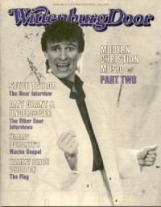
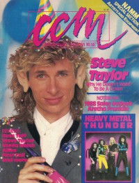
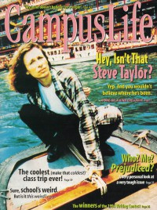

Steve Taylor
|  October 1984 The Wittenburg Door |
 Winter 1987 Harvest Rock Syndicate |
 January 1988 CCM |
 November 1993 The Lighthouse |
 March 1994 Campus Life |
Media coverage:
- Feb 1983 in Campus Life "Impressions: Steve Taylor", by Jim Long
- 1983 in Cornerstone "Interview: Steve Taylor", by Jon Trott
- 18 Jan 1984 in Christian Century "People & Events: Church Turned to Disco"
- 1984 in Cornerstone "Interview: Interviews With Cornerstone '84 Artists"
- Jun 1984 in Contemporary Christian Magazine "Cloning Around With Steve Taylor", by Steve Taylor
- Jun 1984 in Contemporary Christian Magazine "The Hidden Danger of the Clone", by Constance Comments
- Jul 1984 in Campus Life "Expressions: On Beyond Clone", by Jim Long
- Sep 1984 in Christian Life "They Take Their Talent to College Campuses", by Karen Tornberg
- Oct 1984 in The Wittenburg Door "The Door Interview"
- Jan 1985 in Campus Life "In Their Own Words: Steve Taylor"
- Jun 1985 in Contemporary Christian Magazine "People & Places: Steve Taylor (married)"
- Sep 1985 in Contemporary Christian Magazine "News Beat: Trans-Atlantic Expression", by Scott Pinzon
- Nov 1985 in Christian Life "Christian Rock: Controversy on the Cutting Edge", by Davin Seay
- Feb 1986 in Contemporary Christian Magazine "Rebel With A Reason", by Davin Seay
- Feb 1986 in Charisma "Christians Excel With New Art Form"
- Jan 1987 in Campus Life "Who Does Not Want To Be A Clone?", by Jim Long
- Win 1987 in Harvest Rock Syndicate "I Predict: Steve Taylor's Next Album", by Mark Eischer
- May 1987 in Christian Herald "A Parent's Guide To Contemporary Christian Music", by Audrey T. Hingley
- Jan 1988 in CCM "Rock'n Role Model", by Chris Willman
- Jan 1988 in CCM "Toys in the Band: Steve Taylor"
- Jan 1988 in Campus Life "Christian Music: The State of The Art", by Jim Long
- Jan 1988 in Notebored "Ever Unpredictable", by George Metzler
- Mar 1988 in Heaven's Metal "Metallizing Steve Taylor's Clones: Whitecross On The Road", by Doug Van Pelt
- Apr 1988 in U "Scene & Heard: Steve Taylor: The U Interview", by Ross Pavlac, Diana Lynne Pavlac
- 13 May 1988 in Christianity Today "Arts: Subversive Communication", by David Neff
- Sum 1988 in Harvest Rock Syndicate "Steve Taylor Blew Up Christian Music... Real Good!", by Chris Well
- 1991 in Cornerstone "Interview: Chagall Guevara, Steve Taylor, Dave Perkins", by David Canfield, Jon Trott
- Nov 1993 in The Lighthouse "Steve Taylor, Chagall Guevara", by Beth Blinn
- Feb 1994 in CCM "Living Life In The Open", by Brian Quincy Newcomb
- Mar 1994 in Campus Life "Expressions: Steve Taylor", by Jim Long
- 1994 in Cornerstone "Interview: Steve Taylor", by David Canfield
- Jun 1994 in The Lighthouse "Steve Taylor: Everybody Loves A Clone: Everybody Loves A Clone", by Beth Blinn
- Jul 1994 in CCM "In The News: Taylor Tribute To Benefit JPUSA", by Gregory J. Rumburg
- Oct 1994 in Syndicate "No More Clowning Around. Sort of.", by Chris Well
- Dec 1994 in CCM "In Concert: Concordia College, St. Paul, MN", by Doug Trouten
- Apr 1995 in CCM "In The News: Chapman, Paris, Taylor Top Dove Nominee List"
- May 1995 in CCM "In The News: Christian Music Finds Widespread Attention", by April Hefner, Mark A Smeby
- Oct 1995 in Christian Music Crossroads "Steve Taylor's Musical Matinee", by Lucas W. Hendrickson
- Jan 1996 in The Wittenburg Door "Revisiting Past Graduates of The Door Interview, Part Five", by Doug Peterson
- 20 May 1996 in Christianity Today "Can't Buy Me Ministry: The Leader of the Band", by Jim Long
- Jan 1997 in CCM "On The Beat: Holy Hollywood", by Marykay Selby
- Dec 1997 in CCM "LabelMan!", by Gregory J. Rumburg
- Jul 1998 in 7ball "Steve Taylor, Squint Entertainment", by Brad Caviness
- Nov 1998 in Christian Single "Featured Artist: Steve Taylor", by Mike Parker
- Aug 1999 in Living With Teenagers "Profile: Salt and Light", by Teresa Lockhart
- May 2000 in CCM "Ready to Roar: Lessons For Lambs", by Melissa Riddle
- 2 Oct 2000 in Christianity Today "Christianity Today Review: Slivers of Enlightenment", by Greg Clugston
- Jul 2003 in CCM "25 Powerful People Who Have Made Christian Music What It Is Today: Steve Taylor"
- Mar 2004 in CCM "'x' Things You Probably Didn't Know About...: Steve Taylor", by Michael Nolan
- Jul 2005 in CCM "Insider: Behind The Scenes of The Second Chance", by Andy Argyrakis
- Aug 2005 in CCM "Hall of Fame: Steve Taylor", by Chris Well
- Aug 2005 in CCM "List-O-Rama: Before They Put The Hip In Hip-Hop", by Chris Well
- Jan 2006 in Relevant "Slices: Getting A 'Second Chance'"
- Feb 2006 in CCM "Listening In: Michael W. Smith, Steve Taylor, Jeff Obafemi Carr"
- Jul 2006 in HM "Intermission: Trading A Baby...", by Chris Callaway
- Jan 2007 in CCM "List-O-Rama: Book 'Em Jimbo: 5 Proofs of the Secret Connection Between Crime Stories and Christian Music", by Chris Well
- Apr 2012 in Christianity Today "Christianity Today Review: Fuzzy Jazz", by Josh Hurst
- Apr 2012 in HM "Live Report: SXSW 2012, March 10-17", by Clutch
- Sep 2012 in HM "Intermission: Blue Like Jazz", by Mike Kaply
Albums & reviews:
1982: I Want to Be a Clone
- 1983 in Cornerstone, by Ross Pavlac
- Jan 1983 in Contemporary Christian Music
- Jun 1988 in CCM
1984: Meltdown
- 1984 in Cornerstone, by Jon Trott
- May 1984 in Contemporary Christian Magazine, by Thom Granger
- Jul 1984 in Charisma, by Richard Nakamoto
- Jul 1984 in The Lutheran, by Steve Rabey
- Sep 1984 in Christian Herald, by Peter Gross
- Win 1985 in YouthWorker, by Paul Thigpen
- Jan 1985 in Campus Life
- Jan 1985 in Contemporary Christian Magazine
- Aug 1985 in MusicLine, by Thom Granger
- Fall 1985 in Sound Choice, by Jamie Lee Rake
- Jun 1988 in CCM
1985: On The Fritz
- 1985 in Cornerstone, by Jon Trott
- Jul 1985 in MusicLine, by Brian Quincy Newcomb
- Jul 1985 in Campus Life
- Jul 1985 in Contemporary Christian Magazine, by Bob Darden
- Fall 1985 in YouthWorker, by Mike Crooker
- Nov 1985 in Christian Herald, by Peter Gross
- May 1986 in Contemporary Christian Magazine, by Bruce A. Brown
1985: Transatlantic Remixes with Sheila Walsh
- Sep 1985 in Campus Life
- Sep 1985 in MusicLine, by Brian Quincy Newcomb
1985: Limelight: Live at Greenbelt
- Mar 1986 in MusicLine
- Apr 1986 in Contemporary Christian Magazine, by Brian Quincy Newcomb
- 24 Aug 1986 in Kirche und Welt
1986: Limelight: The Film
- Sum 1986 in YouthWorker, by Mike Atkinson, Mike Crooker
- Jul 1986 in Campus Life, by Jim Long
- Nov 1987 in CCM, by Thom Granger
1987: I Predict 1990
- 1987 in Cornerstone, by Jon Trott
- Win 1987 in Harvest Rock Syndicate, by Brian Quincy Newcomb
- Jan 1988 in CCM, by Bruce A. Brown
- Win 1988 in YouthWorker, by Mike Atkinson, Mike Devito
- Jan 1988 in Notebored, by David Lowman
- Mar 1988 in Charisma & Christian Life, by Steve Lawson
- Jun 1988 in Group, by Rick Lawrence
1988: I Predict 1990 - The Video Album
- Sum 1988 in Harvest Rock Syndicate, by Brian Quincy Newcomb
- Sep 1988 in CCM, by Steve Rabey
- Nov 1988 in Campus Life, by Jim Long
- Win 1989 in YouthWorker, by Jim Hancock
1988: The Best We Could Find (+3 That Never Escaped)
- Dec 1988 in CCM, by Brian Quincy Newcomb
- Win 1988 in Harvest Rock Syndicate, by Mark Eischer
- Feb 1989 in Campus Life, by Jim Long
1993: Squint
- Fall 1993 in True Tunes News, by John J. Thompson
- Nov 1993 in CCM
- Nov 1993 in The Lighthouse, by Roger Appelinski
- Jan 1994 in Campus Life
- Feb 1994 in Moody, by Donna L. Hankins
- Feb 1994 in Prism, by Fred Clark
- 1994 in Cornerstone, by David Canfield
- Sum 1994 in YouthWorker, by Steve Rabey
1994: Squint: Movies From The Soundtrack
- May 1994 in CCM, by Bruce A. Brown
- May 1994 in Syndicate, by Dan MacIntosh
- 1995 in Cornerstone, by David Canfield
1994: Now the Truth Can Be Told
- Oct 1994 in Religious Broadcasting, by Darlene A Peterson
- Jan 1996 in Living With Teenagers, by Al Menconi
1995: Liver
- Mar 1995 in Syndicate, by Jori Butler
- Jul 1995 in CCM, by Bruce A. Brown
- Jul 1995 in Charisma & Christian Life, by Shawn Morrison
- Jul 1995 in 7ball, by Brad Caviness
- Oct 1995 in Campus Life
2015: Goliath
- 15 Jan 2015 in CCM Digital, by Andy Argyrakis
- Aug 2015 in Down The Line, by Matt Crosslin
Award Summary (Nominations / Wins)
Dove Awards- 1985 Dove Awards
- Artist
- Contemporary Album: Meltdown
- Long Form Video: Limelight: The Film
- Rock Album: I Predict 1990
- Short Form Music Video: "Babylon"
- Rock Recorded Song: "Bannerman"
- Short Form Music Video: "Cash Cow"
- Long Form Video: Squint: Movies From The Soundtrack
- Producer
- Song: "Shine"
- Short Form Music Video: "On The Fritz"
- Producer
- Modern Rock/Alternative Album: Liver
- Modern Rock/Alternative Recorded Song: "On The Fritz"
- Producer
- Producer
- Modern Rock/Alternative Recorded Song: "Shortstop"
- Song: "He Reigns"
- Worship Song: "He Reigns"
- 1994 Billboard Music Video Awards
- Best New Artist Clip, Contemporary Christian: "Bannerman"
- Best New Artist Clip, Contemporary Christian: "Sock Heaven"
- Best Clip, Contemporary Christian: "Bannerman"
- Best Clip, Contemporary Christian: "On The Fritz"
Published articles:
Books about Steve Taylor
- "New Frontiers" in Contemporary Christian Music (Paul Baker, 1985).
- "Steve Taylor" in The Heart of Rock and Roll (Steve Rabey, 1986).
- "Life Is A Dance" in Soul2Soul (Christopher L Coppernoll, 1998).
- "Thunderbolts and Lightning: The Writing of Music for God" in Soul2Soul (Christopher L Coppernoll, 1998).
- "Steve Taylor" in The Encyclopedia of Contemporary Christian Music (Mark Allan Powell, 2002).
- "Steve Taylor" in The Billboard Guide to Contemporary Christian Music (Barry Alfonso, 2002).
External Links
© 2011 CMnexus. Last updated May 2025. Contact: editor -AT- cmnexus -DØT- org